Datenreduktion
Data-Reduction
Zusammenfassung
Origin enthält eine Anzahl von Hilfsmittels, die für die Datenreduktion in Arbeitsblättern verwendet können: Datenfilter, Daten aus Arbeitsblatt extrahieren und mehrere X-Funktionen, die die Anzahl der Datenzeilen mit verschiedenen Methoden reduzieren.
Origin-Version mind. erforderlich: 2015 SR0
Was Sie lernen werden
In diesem Tutorial lernen Sie, wie Sie:
- XY-Daten auf äquidistant verteilte X-Werte reduzieren,
- duplizierte X-Daten für den XY-Datensatz reduzieren,
- XY-Daten nach Gruppe reduzieren,
- Arbeitsblattzeilen reduzieren.
Schritte
Auf äquidistant verteilte X-Werte reduzieren
- Erstellen Sie eine neue Arbeitsmappe und klicken Sie auf die Schaltfläche
 , um die Datei Signal with High Frequency Noise.dat im Verzeichnis <Origin>\Samples\Signal Processing zu importieren.
, um die Datei Signal with High Frequency Noise.dat im Verzeichnis <Origin>\Samples\Signal Processing zu importieren.
- Markieren Sie Spalte B und wählen Sie Analyse: Datenbearbeitung: Äquidistante X-Daten reduzieren, um den Dialog reduce_ex aufzurufen. Bearbeiten Sie die Einstellungen, so dass Sie mit folgenden übereinstimmen.
- 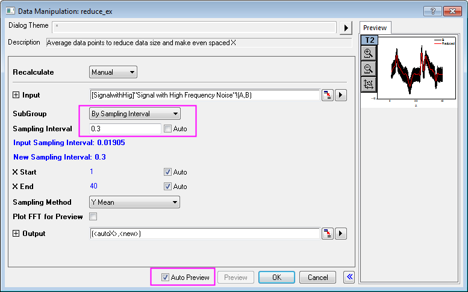
- Klicken Sie auf OK. Eine neue Spalte (Spalte C) wird zu dem Arbeitsblatt hinzugefügt. Diese Spalte enthält ihre eigenen Informationen zum Abtastintervall. Klicken Sie auf den Spaltenheader, um die Spalte zu markieren und wählen Sie dann Spalte: X-Spalte zeigen. Klicken Sie im Dialog X-Spalte zeigen: colshowx auf OK, um eine X-Spalte zu erzeugen, indem Sie das Abtastintervall verwenden. Sie können sehen, dass der ursprüngliche XY-Datensatz durch das Erzeugen eines neuen, größeren Abtastintervalls reduziert wurde.
- 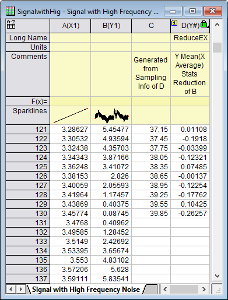
- Markieren Sie Spalte B und D (halten Sie die Strg-Taste gedrückt, um eine Mehrfachauswahl zu treffen) und klicken Sie auf die Schaltfläche
 , um ein Liniendiagramm für die Originaldaten (schwarz) und die reduzierten Daten (rot) zu erstellen.
, um ein Liniendiagramm für die Originaldaten (schwarz) und die reduzierten Daten (rot) zu erstellen.
- Sie können in der Zeichnung erkennen, dass die Datengröße beträchtlich reduziert wurde:
- 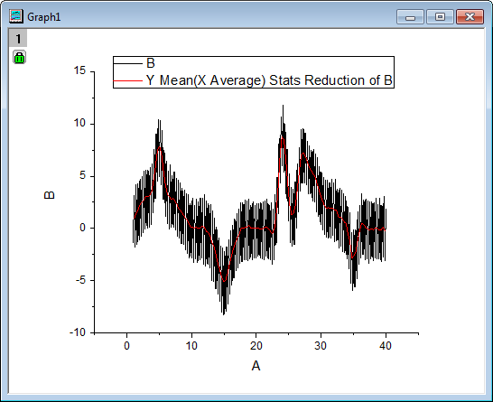
Duplizierte X-Daten reduzieren
- Erstellen Sie eine neue Arbeitsmappe und klicken Sie auf die Schaltfläche , um den Importassistenten zu öffnen. Wählen Sie die Datendateien Step01.dat, Step02.dat und Step03.dat im Verzeichnis <Origin>\Samples\Curve Fitting\. Wechseln Sie den Importmodus in Neue Zeilen öffnen und stellen Sie sicher, dass der Standarddatenfilter step angewendet wird. Klicken Sie auf Fertigstellen, um diese Datendateien zu importieren.
- Markieren Sie Spalte A und B, wählen Sie Analyse: Datenbearbeitung: Duplizierte X-Daten reduzieren, um den Dialog reducedup zu öffnen. Duplizieren Sie die Einstellungen wie unten ausgewählt:
- 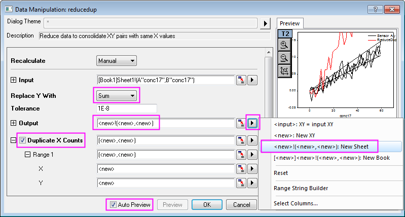
- Klicken Sie auf OK, um die Einstellungen anzuwenden. Im Ergebnisblatt Sheet2 können Sie sehen, dass für jeden X-Wert 3 Duplikate gefunden wurden. In dem reduzierten Datensatz wurden die Y-Werte für jedes duplizierte X mit der Summe der Y-Werte ersetzt.
- 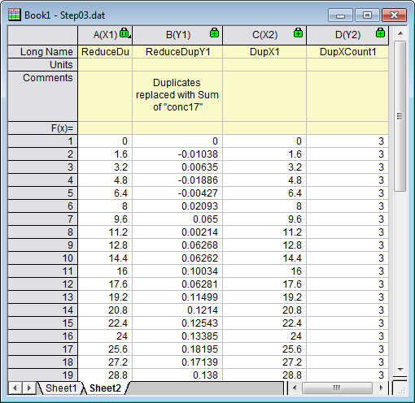
Duplizierte Zeilen reduzieren/kombinieren
- Wechseln Sie zu Sheet1 des vorherigen Abschnitts, markieren Sie Spalte A und wählen Sie Worksheet: Duplizierte Zeilen entfernen/kombinieren, um den Dialog wdeldup zu öffnen. Wählen Sie die Option Durchschnitt in der Auswahlliste Duplikate zusammenfügen nach und klicken Sie auf das nach rechts weisende Dreieck in der Zeile Arbeitsblatt ausgeben, um <neu>: Neues Blatt auszuwählen und das Kontrollkästchen Anzahl ausgeben zu aktivieren. Klicken Sie auf OK.
- 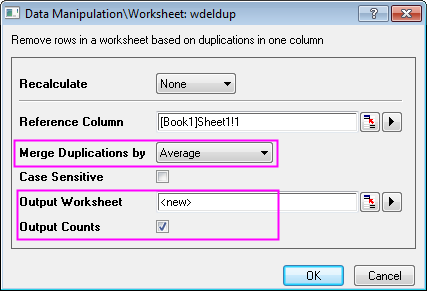
- Ganze Arbeitsblattzeilen werden in die Durchschnittswerte der zusammengefügten Zeilen reduziert, die durch Duplikate in der ausgewählten Spalte bestimmt werden. Eine neue Spalte Anzahl wird am Ende des Ergebnisblatts wdeldup hinzugefügt. Sie listet die Anzahl der Duplikate auf, die für jeden X-Wert gefunden wurden.
- 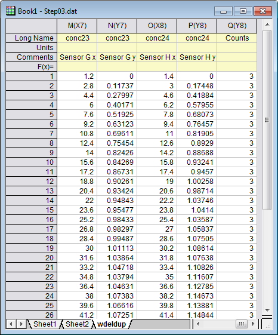
 |
Das Hilfsmittel Duplizierte X-Werte reduzieren ist nur für XY-Datensätze verfügbar, während das Hilfsmittel Duplizierte Zeilen entfernen auf ein gesamtes Arbeitsblatt angewendet werden kann.
Sie können auch duplizierte XY-Daten aus einem XYZ-Datensatz entfernen, indem Sie das Hilfsmittel Spaltenstatistik verwenden. Bitte lesen Sie Weiteres in der Schnellhilfe nach.
|
Nach Gruppe reduzieren
- Öffnen Sie eine neue Arbeitsmappe und klicken Sie dann auf die Schaltfläche , um die Datei Magnetization.dat im Verzeichnis <Origin>\Samples\Data Manipulation zu importieren.
- Markieren Sie Spalte A und B und klicken Sie auf die Schaltfläche , um ein Liniendiagramm zu erzeugen.
- Aktivieren Sie dieses Diagramm und wählen Sie Analyse: Datenbearbeitung: Nach Gruppe reduzieren, um den Dialog reducexy zu öffnen. Bearbeiten Sie Ihre Einstellungen, wie unten zu sehen:
- 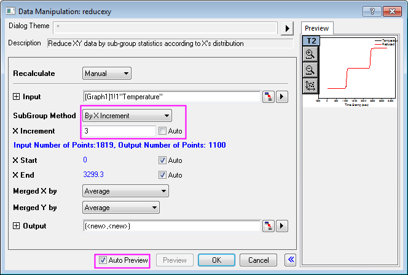
- Klicken Sie auf OK, um die Daten zu reduzieren. Der reduzierte XY-Datensatz wird in Form von zwei neuen Spalten am Ende des Originalarbeitsblatts hinzugefügt:
- 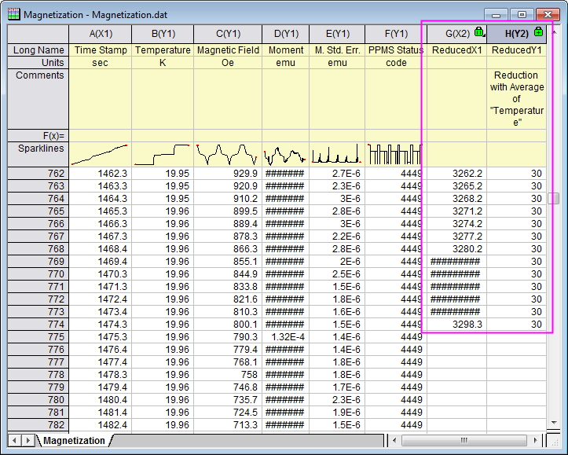
- Der reduzierte XY-Datensatz wird als neue Datenzeichnung zu dem Originaldiagramm hinzugefügt:
- 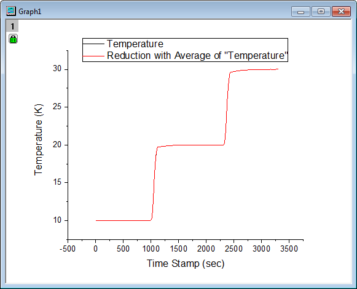
Arbeitsblattzeilen reduzieren
- Öffnen Sie eine neue Arbeitsmappe und klicken Sie dann auf die Schaltfläche , um die Datei Nitrite.dat (Pfad lautet <Origin>\Samples\Spectroscopy) zu importieren. In dieser Datei gibt es 6392 Datenpunkte.
- 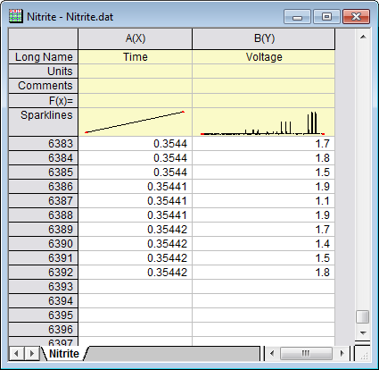
- Markieren Sie beide Spalten im Arbeitsblatt Nitrate und wählen Sie Worksheet: Zeilen reduzieren, um den Dialog wreducerows zu öffnen, und bearbeiten Sie die Einstellungen so, dass sie dem Bild unten entsprechen:
- 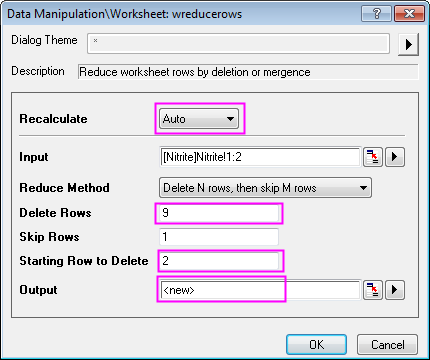
- Hinweis: Sie können auf die Pfeilschaltfläche rechts von dem Auswahlfeld Ausgabe klicken und die Option <neu>:Neue Spalte(n) wählen, um die Auswahl zu treffen.
- Wenn Sie auf OK klicken, wird nur die erste von jeweils 10 Zeilen beibehalten. Neunzig Prozent der Datenpunkte werden verworfen. Die verbleibenden Datenpunkte werden in den neuen Spalten ausgegeben:
- 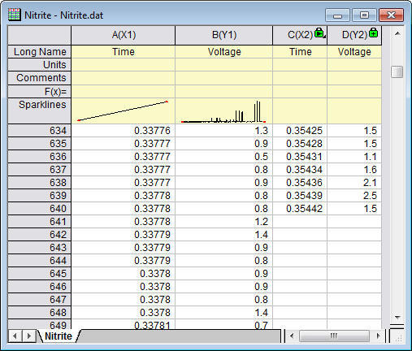
- Markieren Sie das gesamte Arbeitsblatt und klicken Sie auf die Schaltfläche , um die Liniendiagramme für die Originaldaten (schwarz) und die reduzierten Daten (rot) zu erzeugen:
- 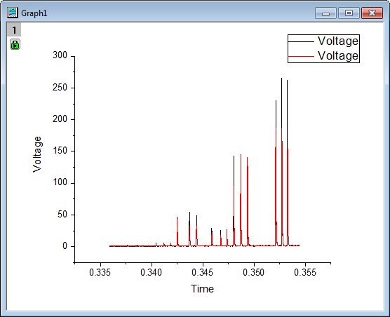
- Beachten Sie, dass die Peakhöhen sich mit der Datenreduktion verändert haben. Um die Form der Datenzeichnung zu erhalten, sollten Sie mehr Datenpunkte behalten. Klicken Sie auf das grüne Schloss auf Graph 1 und wählen Sie Parameter ändern, um die Einstellungen im Dialog wreducerows erneut zu ändern. Legen Sie den Wert von Zeilen löschen auf 3 fest und klicken Sie auf OK.
- Dieses Mal werden 25% der Datenpunkte beibehalten, wodurch die Form der ursprünglichen Datenzeichnung besser erhalten bleibt.
- 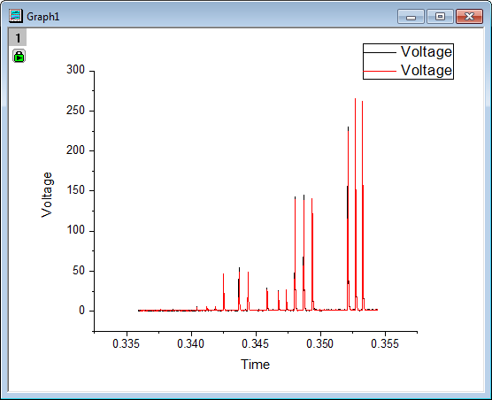